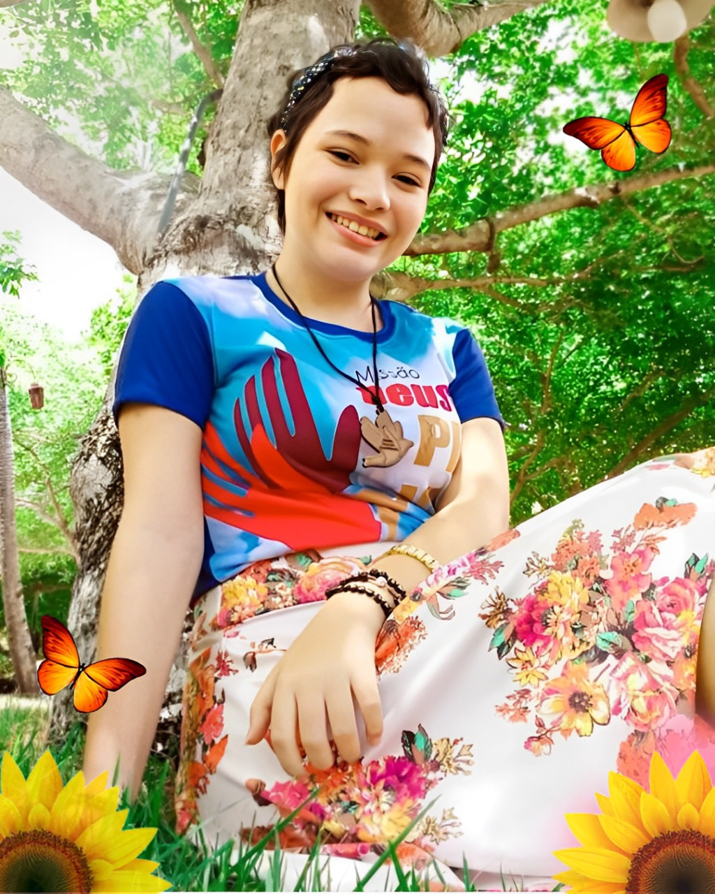

Encontro com Deus
Uma vida comunitária sustentada pela oração, pela Palavra e pela celebração da fé.
Fé • Comunhão • Missão
Um lugar de encontro com Deus, de oração, acolhimento e serviço à Igreja e aos irmãos.
Quem somos
A Comunidade Deus da Providência é chamada a viver a comunhão para ser missão na Igreja.
Inspirados pelo amor de Jesus, buscamos cultivar uma vida de oração, fraternidade, evangelização e serviço. Queremos acolher cada pessoa com carinho e caminhar juntos na fé.
“Ter comunhão, para ser missão na Igreja.”Conheça nossa história →

Pequenos gestos, feitos com amor, podem tocar profundamente uma vida.
Nossa história
Cada oração, missão e encontro faz parte da história que Deus continua escrevendo conosco.
Uma vida comunitária sustentada pela oração, pela Palavra e pela celebração da fé.
Caminhamos como irmãos, partilhando dons, responsabilidades e a alegria de servir.
Saímos ao encontro das pessoas por meio da evangelização, da acolhida e das ações solidárias.
Este texto é uma apresentação inicial. Acrescente aqui a data de fundação, os nomes dos fundadores e os principais marcos históricos da comunidade.

Em memória, com amor e fé
Uma menina de fé, oração e amor a Deus
Existem vidas que deixam marcas eternas. Maria Eduarda foi uma menina de fé e oração, cuja presença e história permanecem vivas no coração de sua família e de todos aqueles que tiveram a graça de conhecê-la.
Sua história faz parte da caminhada da Comunidade Deus da Providência. Seu testemunho nos convida a confiar em Deus, buscar a oração e cultivar um coração cheio de amor. Sua devoção e sua fé são lembranças preciosas que continuam inspirando aqueles que a amam.
A saudade permanece, mas também permanece a esperança cristã, que nos sustenta na certeza do amor e da misericórdia de Deus. Maria Eduarda nunca será apenas uma lembrança: sua vida faz parte da história e do coração desta comunidade.
“Combati o bom combate, terminei a corrida, guardei a fé.” — 2 Timóteo 4,7
Maria Eduarda, filha amada, testemunho de fé e lembrança eterna. Para sempre em nossos corações. 🕊️
Programe-se
Acompanhe os próximos momentos de oração, formação e fraternidade.
Tema: Casais Edificados Sobre a Rocha
📍 Granja de Dona Lenita Maia • Gurinhém-PB
Santa Missa, louvor, oração, adoração, pregação e momento romântico.
Outras datas de missões, retiros, celebrações e ações sociais serão divulgadas aqui. Confirme horários e programação nos canais oficiais da comunidade.
Vida comunitária
Momentos para fortalecer a fé, criar laços e servir a quem mais precisa.
Louvor, oração, adoração e encontro pessoal com Jesus.
Momentos de formação, fraternidade e renovação espiritual para famílias, casais e jovens.
Serviço aos irmãos em situação de vulnerabilidade e campanhas de arrecadação.
Encontros fraternos e iniciativas para apoiar as atividades e necessidades da comunidade.
Memórias da missão
Registros de encontros, celebrações, missões e momentos vividos em comunidade.
Para ampliar a galeria, coloque novas fotos na pasta assets e duplique um dos blocos de imagem no arquivo index.html.
“Onde tem oração, tem vitória.”
Comunidade Deus da ProvidênciaVamos caminhar juntos
Quer participar de um encontro, colaborar com uma missão ou saber mais sobre a comunidade?
Comunidade Deus da Providência
Centro de Gurinhém – Paraíba
Adicione aqui o WhatsApp, e-mail e os links oficiais das redes sociais da comunidade.
Será uma alegria acolher você e sua família em nossos encontros e missões.
Antes de publicar, substitua este texto pelos contatos oficiais e inclua os links corretos de WhatsApp, Instagram e Facebook.